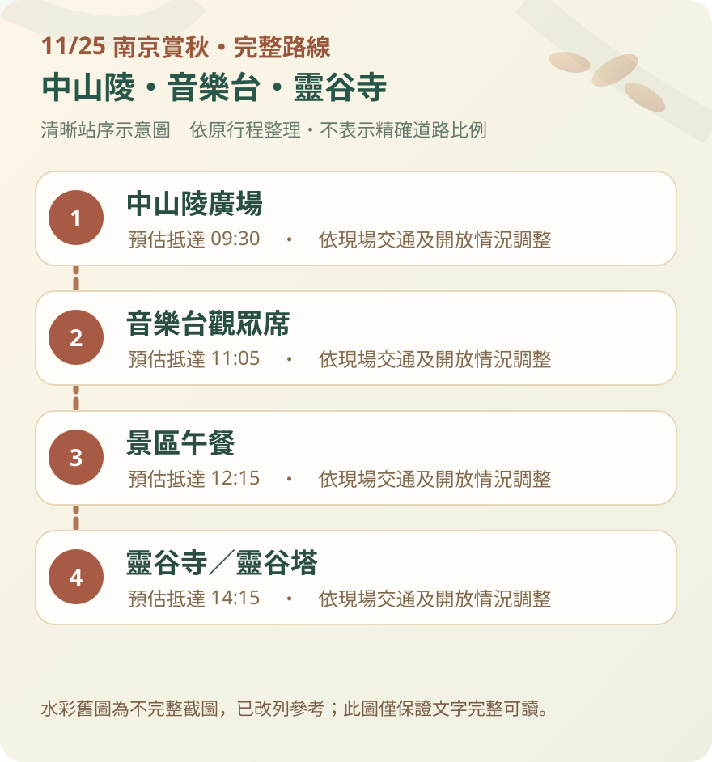

中山陵・音樂台・靈谷景區
🍁 11-25｜中山陵・音樂台・靈谷寺｜清晰完整路線圖｜水彩待重製

查看舊水彩局部素材（原始檔左右已裁缺，非完整路線圖）

上午中山陵廣場與音樂台，午餐休息，下午靈谷景區；流徽榭遠繞為選配，392 級台階不必全爬。
去程｜中山陵先走
依原行程，搭地鐵 2 號線至下馬坊站，轉乘官方接駁至中山陵停車場西／中山陵附近站，從開放道路進廣場。景區官方亦有其他進入方式，避免選擇長距離登山。
iPhone 規劃至下馬坊站廣場與紀念建築主軸是主要拍攝重點；392 級台階可以視體力省略，不把登至最高處當作必須。
依當日現場入口與開放道路，步行前往音樂台，預留 20–30 分鐘；找觀眾席高排拍弧形舞台和白鴿。
iPhone 規劃至音樂台🚌 午餐後前往靈谷景區
12:15 午餐休息，13:45 後依景區接駁移動，原定約 14:15 抵達靈谷寺／靈谷塔。
官方接駁資訊將「中山陵（紫金山路）—流徽榭—靈谷景區—體育公園—鐘靈街站」列於大環線一段；也有「鐘靈街站—體育公園—靈谷景區—流徽榭—孫中山紀念館（音樂台）」的另一方向路線。從音樂台上車時先看站牌行車方向，別把去回程當同一班。
- 中山陵／音樂台附近：確認上車站點與方向
- 靈谷景區：抵達後從開放路線進園
- 靈谷塔秋色：在塔外步道拍彩葉；登塔依體力決定
觀光車公布票價：單次 ¥10／人、當日不限次 ¥30／人（特色講解線除外）。班次、站點、交通管制以當日公告為準。必要時查官方
🎫 台胞證＋微信｜兩人入園
用先生的大陸門號作聯絡電話，兩人以微信搜尋官方「南京钟山风景区／中山陵园票务中心」進入中山陵免費預約；按系統選兩名遊客與可用證件類型，保留預約 QR。官方允許線上預約，但台胞證是否能直接掃碼入園未見明確統一規定。
這兩處官方可現場購票；若微信小程式可選台胞證就分別填兩人資料，否則持兩本台胞證正本去人工窗口，不要把台胞證號硬填居民身分證欄。付款後保留 QR、訂單及證件。
先查原訂單的使用日期與有效期限；不能假設跨日仍可使用。11/25 只逛音樂台與靈谷景區的兩張單票合計每人 ¥45，兩人 ¥90。
官方購票／中山陵預約渠道可用微信；換票與台胞證人工核驗依實際訂單及現場規則。門票服務電話 025-84437786（08:30–17:30）。必要時查官方
🏁 回程｜從靈谷景區離開
官方公布「靈谷景區 → 體育公園 → 地鐵鐘靈街站」的景區大環線方向。若班次合適，可不必返回下馬坊站，從鐘靈街站搭地鐵 2 號線離開。
觀光車站牌要確認往鐘靈街站方向，否則可能搭往流徽榭／音樂台。下車站的電梯出口仍待逐站核實。
iPhone 規劃鐘靈街站如果下午太累，可依現場交通管制，在景區允許上車位置改搭計程車，不強制原路折返。